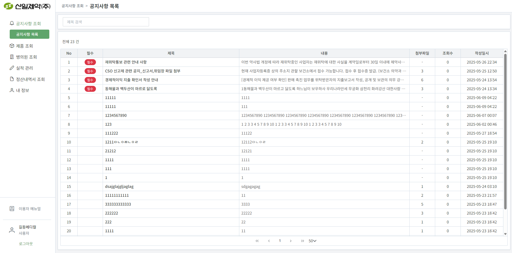
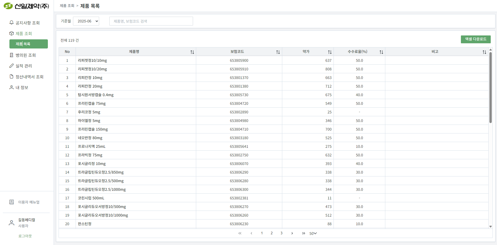
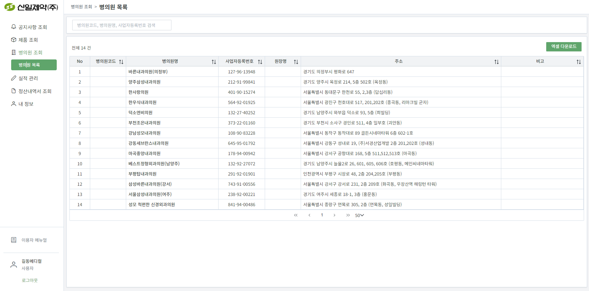
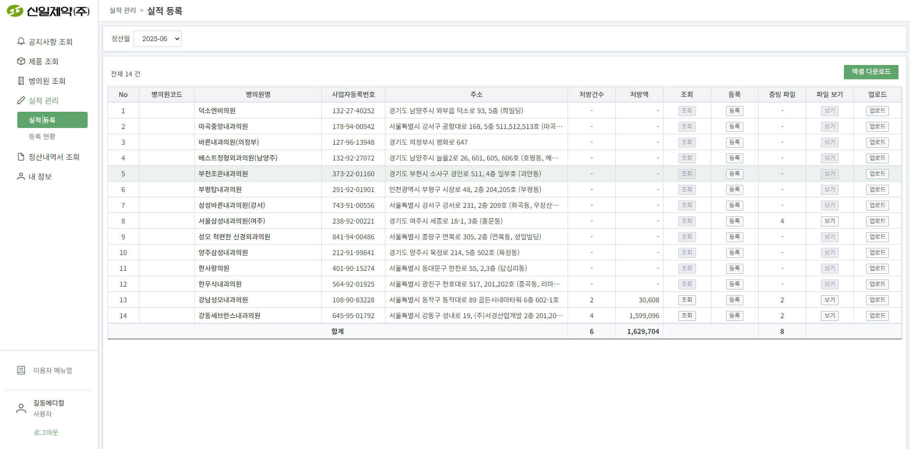
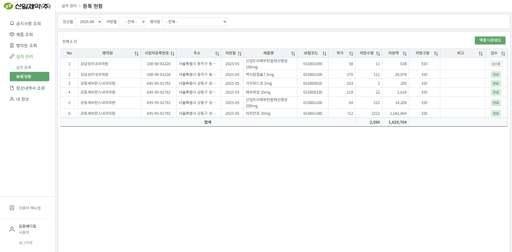
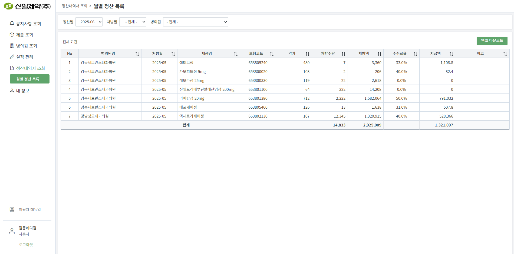
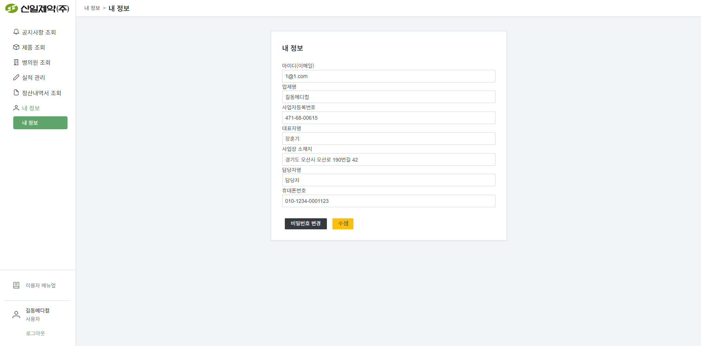
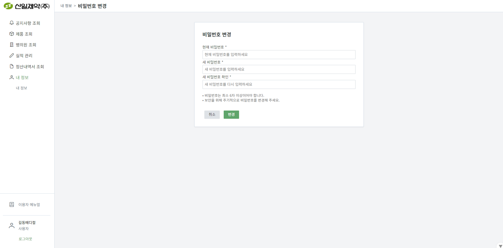

1. 공지사항
1.1 공지사항 목록 /notices
설명: 신일제약에서 공지하는 중요 사항들을 확인할 수 있습니다.

주요 기능:
- 공지사항 목록 조회 - 등록된 모든 공지사항을 제목, 작성일시, 조회수, 고정여부와 함께 확인할 수 있습니다.
- 공지사항 상세 보기 - 공지사항 제목을 클릭하여 상세 내용과 첨부파일을 확인할 수 있습니다.
- 고정 공지사항 - 중요도가 높은 공지사항은 상단에 고정되어 항상 먼저 확인할 수 있습니다.
- 첨부파일 다운로드 - 공지사항에 첨부된 파일을 다운로드하여 확인할 수 있습니다.
- 조회수 표시 - 각 공지사항의 조회수를 확인하여 인기도를 파악할 수 있습니다.
2. 제품 정보
2.1 제품 목록 /products
설명: 신일제약의 제품 정보를 조회할 수 있습니다.

주요 기능:
- 제품 목록 조회 - 제품명, 표준코드, 기준월, 제품분류 등의 정보를 확인할 수 있습니다.
- 제품 상세 정보 - 제품명을 클릭하여 제품의 상세 정보를 확인할 수 있습니다.
- 제품 검색 - 제품명이나 표준코드로 원하는 제품을 빠르게 찾을 수 있습니다.
- 제품 분류별 필터링 - 제품 분류에 따라 제품을 필터링하여 조회할 수 있습니다.
3. 병의원 정보
3.1 병의원 목록 /clients
설명: 담당하고 있는 병의원 정보를 조회할 수 있습니다.

주요 기능:
- 담당 병의원 조회 - 본사가 담당으로 지정한 병의원 목록을 확인할 수 있습니다.
- 병의원 상세 정보 - 병의원명을 클릭하여 병의원의 상세 정보를 확인할 수 있습니다.
- 연결된 문전약국 - 각 병의원에 연결된 문전약국 정보를 확인할 수 있습니다.
- 병의원 검색 - 병의원명이나 사업자등록번호로 원하는 병의원을 찾을 수 있습니다.
4. 실적 등록
4.1 실적 등록 /performance/register
설명: 병의원에서 발생한 제품 처방 실적을 등록할 수 있습니다.

주요 기능:
- 정산월 선택 - 실적을 등록할 정산월을 선택합니다. 활성화된 정산월만 선택 가능합니다.
- 병의원 선택 - 본사가 담당으로 지정한 병의원 중에서 실적을 등록할 병의원을 선택합니다.
- 실적 정보 입력 - 제품, 처방수량, 처방월, 처방유형, 비고 등의 정보를 입력합니다.
- 파일 첨부 - 실적 증빙 자료를 파일로 첨부할 수 있습니다.
- 실적 저장 - 입력한 실적 정보를 저장하여 검수 대기 상태로 전환합니다.
4.2 실적 수정 /performance/edit
설명: 등록한 실적을 수정하거나 삭제할 수 있습니다.

주요 기능:
- 등록된 실적 조회 - 본사가 등록한 실적 목록을 정산월, 병의원별로 조회할 수 있습니다.
- 실적 수정 - 검수 대기 상태의 실적을 수정할 수 있습니다.
- 실적 삭제 - 잘못 등록된 실적을 삭제할 수 있습니다.
- 검수 상태 확인 - 각 실적의 검수 상태(대기, 검수중, 완료)를 확인할 수 있습니다.
5. 정산내역
5.1 정산내역서 확인 /settlement-share
설명: 신일제약에서 공유한 정산내역서를 확인할 수 있습니다.

주요 기능:
- 정산월별 내역서 조회 - 공유된 정산내역서를 정산월별로 조회할 수 있습니다.
- 정산내역서 상세 확인 - 정산내역서 제목을 클릭하여 상세 내용을 확인할 수 있습니다.
- 정산 금액 확인 - 각 병의원별 실적 건수, 총 처방액, 총 지급액을 확인할 수 있습니다.
- 정산내역서 다운로드 - 정산내역서를 파일로 다운로드하여 보관할 수 있습니다.
6. 내 정보
6.1 내 정보 확인 /myinfo
설명: 본사의 기본 정보를 확인하고 수정할 수 있습니다.

주요 기능:
- 기본 정보 확인 - 업체명, 사업자등록번호, 대표자명, 담당자, 연락처, 주소 등의 정보를 확인할 수 있습니다.
- 정보 수정 - 담당자, 연락처, 주소 등의 정보를 수정할 수 있습니다.
- 수수료 등급 확인 - 본사의 수수료 등급(A, B, C 등)을 확인할 수 있습니다.
- 계정 상태 확인 - 본사 계정의 활성/비활성 상태를 확인할 수 있습니다.
6.2 비밀번호 변경 /change-password
설명: 로그인 비밀번호를 변경할 수 있습니다.

주요 기능:
- 현재 비밀번호 확인 - 비밀번호 변경 시 현재 비밀번호를 입력하여 본인 확인을 합니다.
- 새 비밀번호 입력 - 새로운 비밀번호를 입력합니다. 보안을 위해 8자 이상의 영문, 숫자, 특수문자 조합을 권장합니다.
- 비밀번호 확인 - 새 비밀번호를 한 번 더 입력하여 오타를 방지합니다.
- 비밀번호 변경 - 모든 정보가 올바르면 비밀번호를 변경합니다.